| Nome do produto | Belka — "Olhar longe. Proteger perto." |
|---|---|
| Cidadão e território | Moradores de municípios paulistas expostos a alagamentos, deslizamentos e calor extremo, inclusive com celulares de entrada e pouca conectividade. Piloto: São Paulo, Guarulhos, Campinas, Franco da Rocha e São Sebastião (SP). |
| Problema, em uma frase | Em eventos climáticos extremos, o cidadão não encontra em um só lugar uma informação clara sobre o risco no seu município nem uma orientação confiável sobre o que fazer. |
| Proposta de valor | App web leve e acessível que reúne indicadores de risco por município e um assistente de IA que orienta com base em fontes oficiais, citando a fonte e recusando quando não sabe — complementando a Defesa Civil. |
| Arquitetura: componentes | Front-end web mobile-first · API FastAPI · LLM local Ollama (qwen2.5:1.5b) com RAG e agente · camada Ouro no Databricks · Azure Container Apps · Application Insights · GitHub Actions |
| Fontes de dados | Open-Meteo Forecast/Flood API, IBGE (população), Defesa Civil Nacional e Ministério da Saúde (base de conhecimento), camada Ouro do Databricks |
| Modelos de IA | Qwen2.5-1.5B-Instruct via Ollama (RAG + agente com ferramenta de clima) e adaptador LoRA próprio |
| URL do MVP e repositório | https://belka-api.salmonisland-04dfa6a6.brazilsouth.azurecontainerapps.io https://github.com/Th3PL/belka-app-mvp |
| Indicadores de impacto | Consultas e usuários ativos por município; % de respostas fundamentadas com citação e taxa de alucinação; disponibilidade e latência p95; nº de municípios monitorados |
| ODS conectados | ODS 11 (11.5), ODS 13 (13.1), ODS 3 (3.d) |
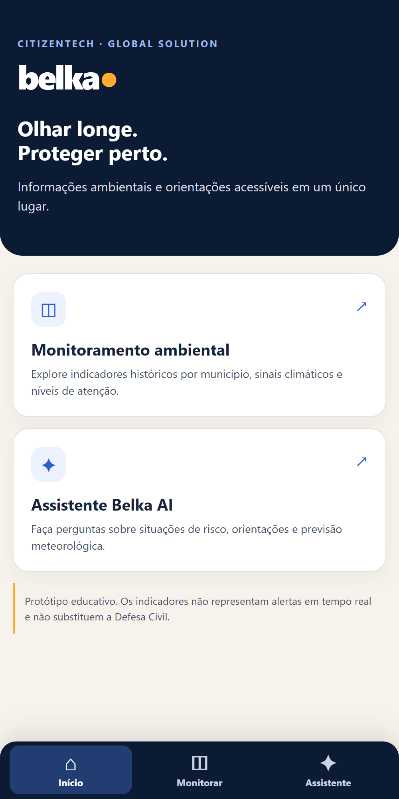
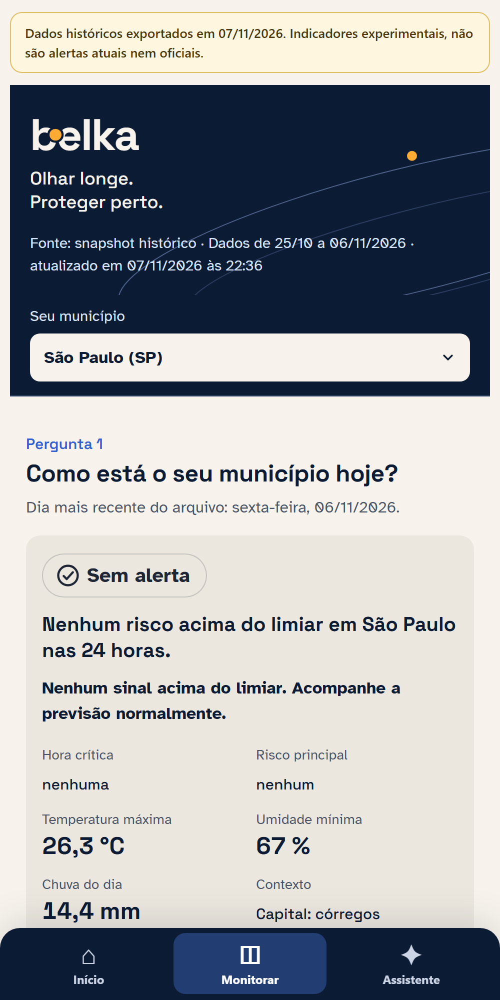
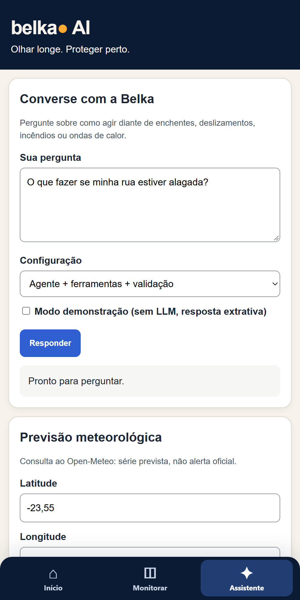
| Componente | Recurso | Exposição |
|---|---|---|
| API + front-end | Container App belka-api · 0,5 vCPU / 1 GiB · 1–3 réplicas | HTTPS público (TLS gerenciado); HTTP → 301 HTTPS |
| LLM | Container App belka-ollama · 2 vCPU / 4 GiB · 0–1 réplica (escala a zero) | HTTPS com Bearer token obrigatório (proxy Caddy → 401 sem token); Ollama escuta só em 127.0.0.1 |
| Observabilidade | Application Insights + Log Analytics (30 dias, teto 1 GB/dia), Workbook, 2 alertas, Action Group | Portal Azure (RBAC) |
| Imagens | GitHub Container Registry (belka-api, belka-ollama) | Públicas (código aberto) |
| State do Terraform | Storage Account stbelkatf… (versionamento, TLS 1.2, sem chave compartilhada, sem blob público) | Somente Entra ID |
| Identidade de deploy | Managed Identity id-belka-github com credencial federada (OIDC) | Contributor só em rg-belka |
O desenho original previa o LLM com ingress interno. A assinatura Azure for Students, porém, só recebe ambientes Container Apps no modo Express, que não tem descoberta de serviços internos (apps conversam pela URL pública). Testamos criar um ambiente Standard em todas as regiões permitidas pela política da assinatura e a Azure recusou em todas:
brazilsouth, chilecentral, northcentralus, spaincentral, belgiumcentral: ManagedEnvironmentModeNotSupported: The managed environment mode Standard is not currently available in this region.
Solução adotada, mantendo os dados no Brasil: o Ollama (que não tem autenticação) escuta só em 127.0.0.1 dentro do container, e um proxy Caddy na porta 8080 exige Authorization: Bearer <token>, respondendo 401 a qualquer outra chamada. O token (48 caracteres aleatórios) é gerado pelo Terraform (random_password), entregue aos dois apps como secret do Container Apps e nunca aparece no código, na imagem ou no GitHub. O container recusa iniciar se o token tiver menos de 32 caracteres.
$ curl -s -o /dev/null -w '%{http_code}' https://belka-ollama.salmonisland-04dfa6a6.brazilsouth.azurecontainerapps.io/api/tags # sem token
401
$ curl -s -H 'Authorization: Bearer errado' https://belka-ollama.salmonisland-04dfa6a6.brazilsouth.azurecontainerapps.io/api/tags # token errado
unauthorized [401]
$ curl -s -X POST https://belka-api.salmonisland-04dfa6a6.brazilsouth.azurecontainerapps.io/api/perguntar -d '{"pergunta":"o que fazer em caso de enchente","configuracao":"rag"}'
{"resposta":"Em caso de enchente, siga as orientações da Defesa Civil e busque um local seguro. Evite ruas alagadas, veículos ou caminhos sem sinais visíveis. Se necessário, prepare documentos e itens essenciais para eventual deslocamento. Não espere a água alcançar um nível perigoso para procurar segurança.","citacoes":["K01","K02"],"configuracao":"rag","fundamentada":true,"ferramentas":[],"meteorologia":null,"erros_ferramentas":[],"json_valido_modelo":true,"aviso":"Protótipo educativo. Não substitui alertas oficiais da Defesa Civil."}
[HTTP 200 em 20.924334s]
| Requisito | Como foi atendido |
|---|---|
| Imagem enxuta | Multi-stage sobre python:3.12-slim; só o venv, app/ e base/ vão para a imagem final (~111 MB). .dockerignore exclui .venv, .env, .git, IaC e o adaptador LoRA. |
| Usuário não root | useradd --uid 10001 --shell nologin + USER 10001 (API e Ollama). Código pertence ao root e é somente leitura. |
| Sem segredo na imagem | Nenhum ENV/ARG com credencial; tudo entra em tempo de execução (secrets do Container Apps). Gitleaks varre o repositório a cada push. |
| Patches de SO | apt-get upgrade na imagem final — adicionado após o Trivy barrar 2 CVEs HIGH no zlib1g. |
| docker compose | api + ollama (modelo embutido), healthchecks, read_only, cap_drop: ALL, no-new-privileges; o LLM não publica porta no host. |
$ docker image inspect belka-api:local --format 'user={{.Config.User}} size={{.Size}}'
user=10001 size=111009896
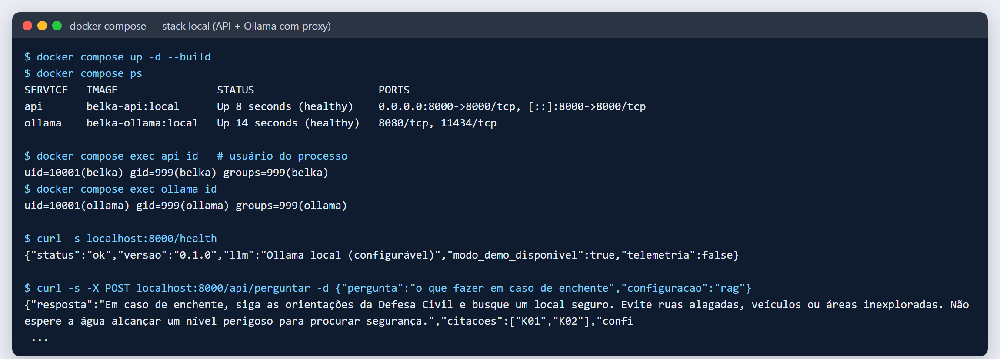
| Requisito | Como foi atendido |
|---|---|
| Infra como código | infra/: Log Analytics, App Insights, Container Apps Environment, 2 Container Apps, Action Group, 2 alertas de métrica e Workbook. Aplicado pelo pipeline (plan → apply). |
| State fora do repositório | Backend azurerm no Storage rg-belka-tfstate, autenticação Entra ID (OIDC), versionamento de blobs e lock nativo. |
| .tfvars fora do repositório | *.tfvars, *.tfstate* e .terraform/ no .gitignore; versionado só terraform.tfvars.example. No CI, valores chegam por TF_VAR_* a partir de GitHub Secrets. |
| Porta admin nunca aberta a 0.0.0.0/0 | Não existe VM, SSH nem RDP: Container Apps é PaaS. As únicas entradas são HTTPS 443 (TLS gerenciado): a API pública e o proxy do LLM, que exige token; o Storage do state não aceita chave compartilhada nem acesso anônimo. |
| Menor privilégio | A identidade do pipeline tem Contributor apenas em rg-belka e Storage Blob Data Contributor apenas no Storage do state. |
$ az containerapp list -g rg-belka --query "[].{app:name, externo:properties.configuration.ingress.external, porta:properties.configuration.ingress.targetPort}" -o table
App Externo Porta
------------ --------- -------
belka-ollama False 11434
belka-api True 8000
$ az vm list -g rg-belka -o tsv | wc -l # nenhuma VM = nenhuma porta SSH/RDP
0
$ az storage account show -n stbelkatf2538618077 --query "{chaveCompartilhada:allowSharedKeyAccess, blobPublico:allowBlobPublicAccess, tls:minimumTlsVersion}" -o table
ChaveCompartilhada BlobPublico Tls
-------------------- ------------- ------
False False TLS1_2
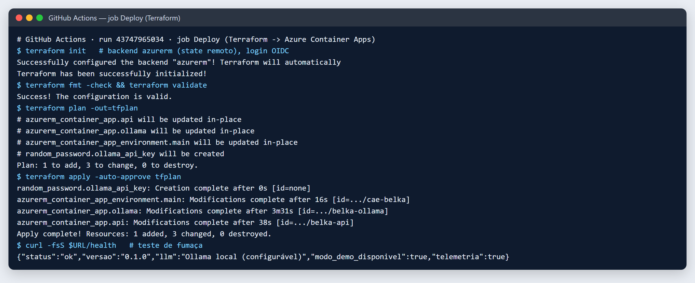
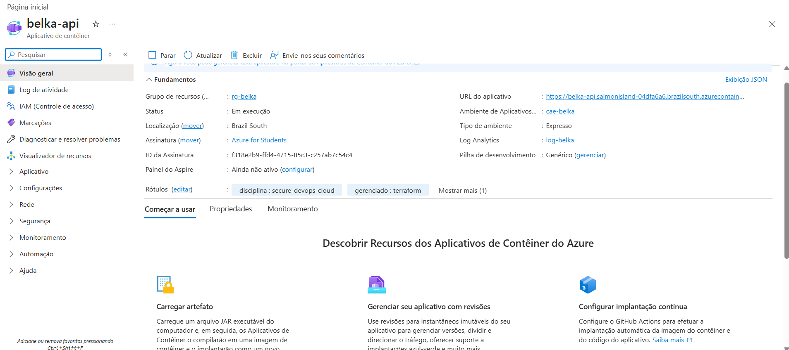
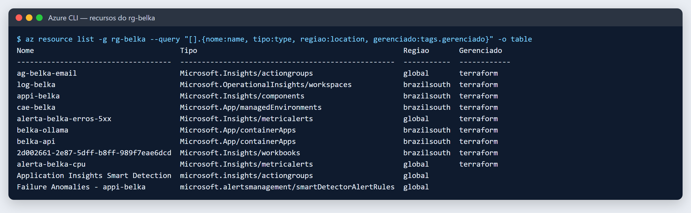
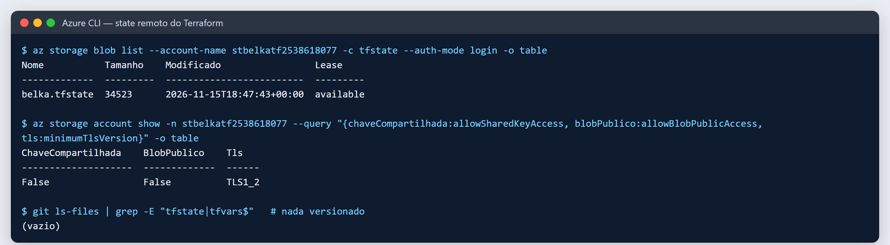
Workflow devsecops.yml, disparado em todo push e pull request. Deploy apenas na main, no Environment production.
| Etapa | Ferramenta | Barra o pipeline quando… |
|---|---|---|
| 1. Segredos | Gitleaks (histórico completo) | encontra credencial em qualquer commit |
| 2. SAST | Semgrep (p/python, p/dockerfile, p/terraform) | há achado nas regras |
| 3. Build | Docker | a imagem não compila |
| 4. Vulnerabilidades | Trivy imagem (SO + bibliotecas) e Trivy config (Dockerfile/Terraform) | CVE HIGH/CRITICAL com correção disponível, ou má configuração HIGH/CRITICAL |
| 5. Publicação | GHCR (tag = SHA do commit) | — |
| 6. Deploy | Terraform fmt → validate → plan → apply, login OIDC | formatação, validação ou apply falham |
| 7. Teste de fumaça | curl /health na URL publicada | a API não responde |
AZURE_CLIENT_ID, AZURE_TENANT_ID, AZURE_SUBSCRIPTION_ID, ALERT_EMAIL (e, opcionalmente, DATABRICKS_*). O login na Azure usa OIDC: não há senha de service principal guardada em lugar nenhum. Nomes não sensíveis (resource groups, storage do state) ficam em GitHub Variables.
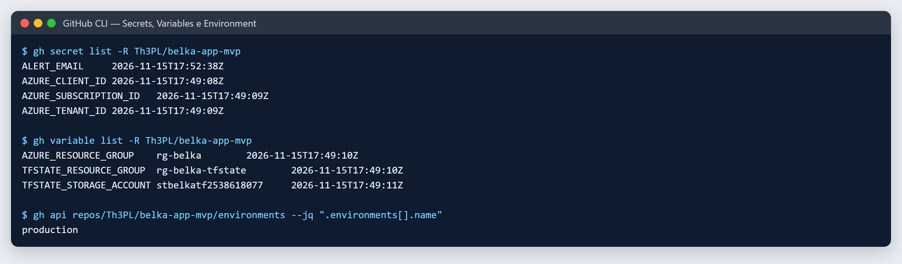
Barrada: commit com credencial AWS falsa na branch demo/segredo-vazado. O Gitleaks detectou aws-access-token e generic-api-key; build e deploy nem executaram. https://github.com/Th3PL/belka-app-mvp/actions/runs/43745100897
RuleID: aws-access-token File: app/config_demo.py Line: 2 RuleID: generic-api-key File: app/config_demo.py Line: 3 WRN leaks found: 2 Gitleaks: failure · Semgrep: success · Build + Trivy: skipped · Deploy: skipped
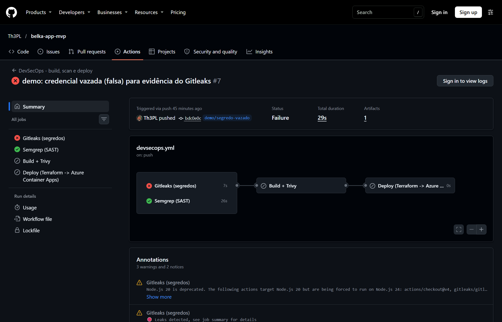
Corrigida: credencial removida e histórico da branch reescrito; o pipeline volta a passar. https://github.com/Th3PL/belka-app-mvp/actions?query=branch%3Ademo%2Fsegredo-vazado
docs/entrega/prints/10-pipeline-corrigido.pngzlib1g da base Debian; a correção foi aplicar apt-get upgrade no Dockerfile (resultado: 0 HIGH/CRITICAL).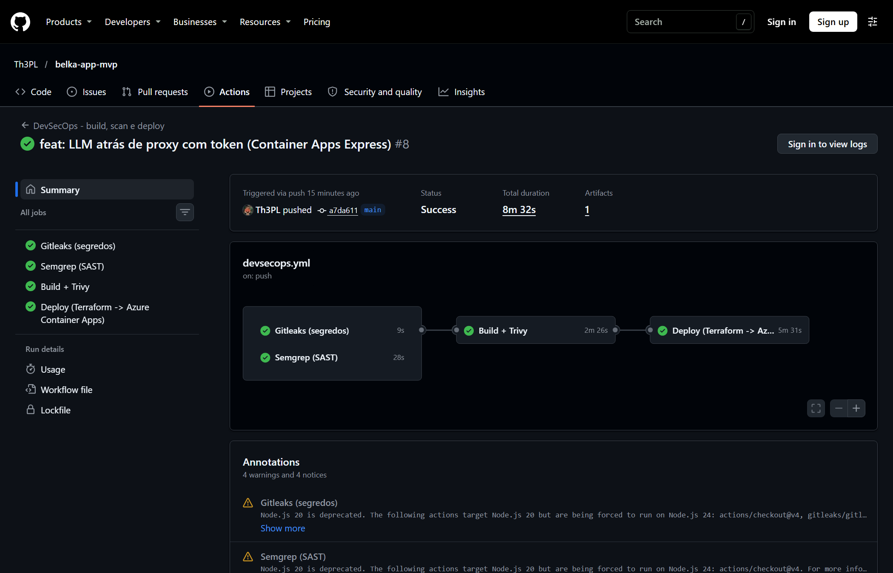
A API é instrumentada com Azure Monitor OpenTelemetry (requisições, dependências, exceções). O dashboard é o Workbook "Belka - Sinais de Ouro", criado pelo Terraform (monitoring.tf).
| Sinal de ouro | Consulta / métrica |
|---|---|
| Latência | requests | percentile(duration, 50/95) a cada 5 min |
| Tráfego | requests | count() por rota a cada 5 min |
| Erros | countif(success == false) e taxa de erro % |
| Saturação | Métricas do Container App: UsageNanoCores (CPU) e WorkingSetBytes (memória) |
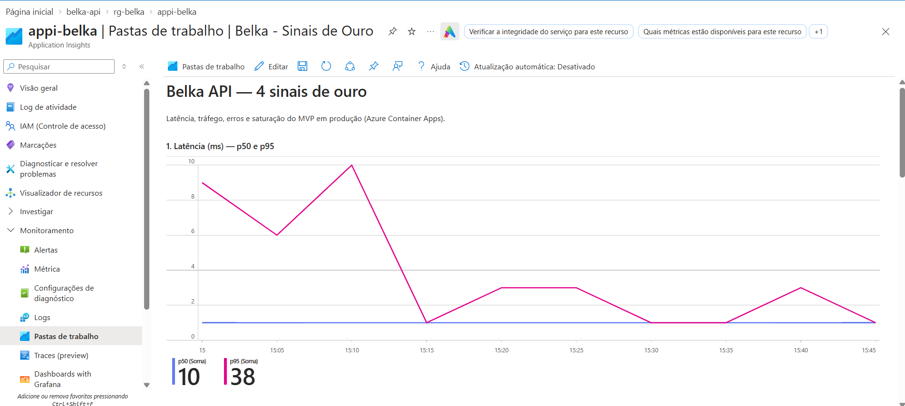
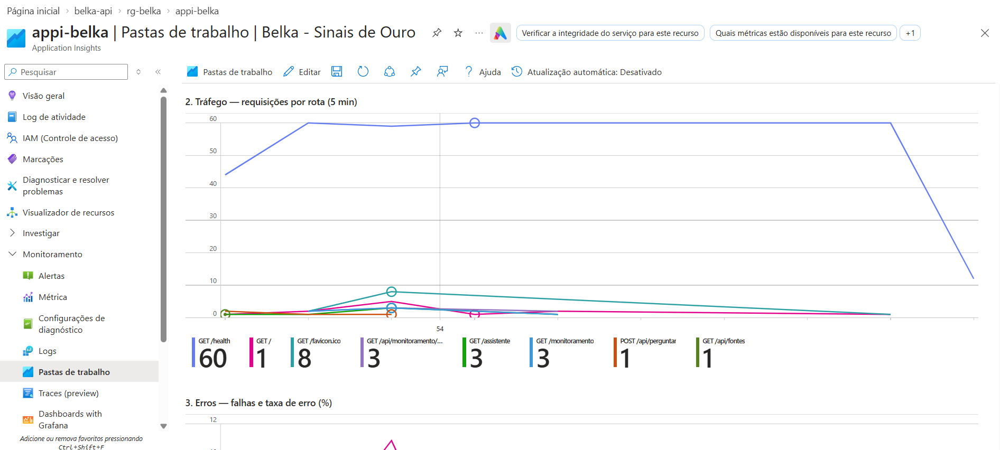
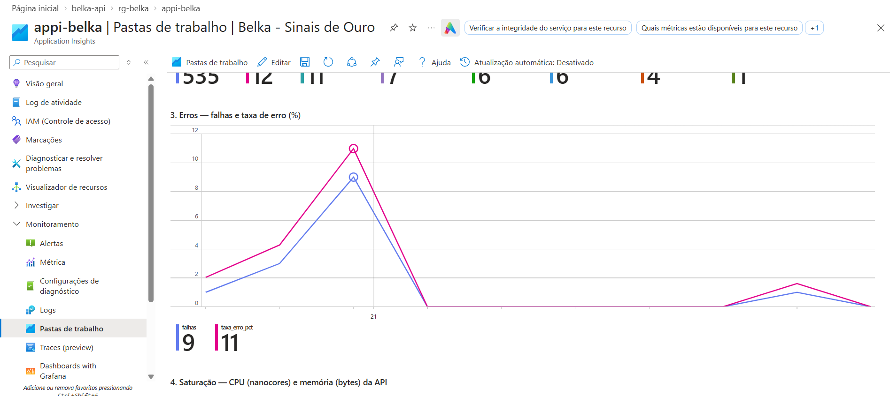
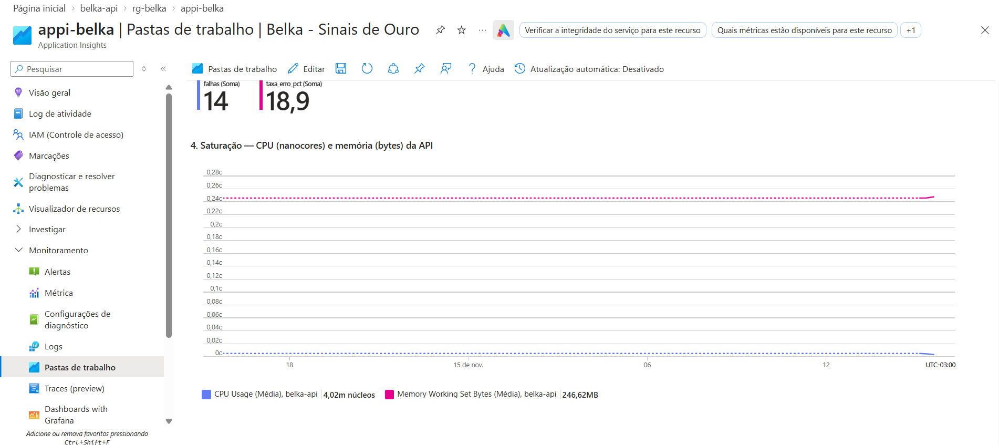
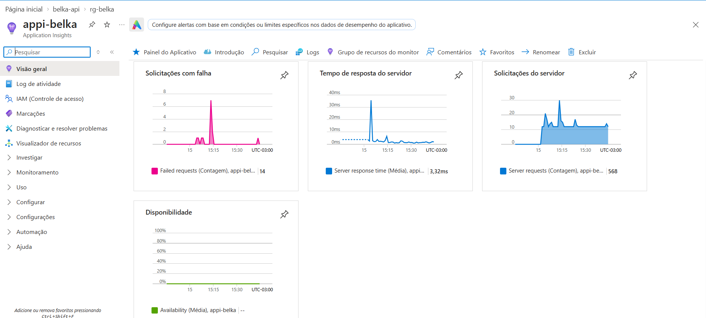
| Alerta | Condição | Ação |
|---|---|---|
alerta-belka-erros-5xx (sev 1) | requests/failed > 3 em 5 min | E-mail para a equipe |
alerta-belka-cpu (sev 2) | CPU média > 0,4 vCPU em 5 min | E-mail para a equipe |
Disparo real: # Alerta disparado (Azure Monitor) — requisições com falha geradas em 2026-11-15T18:48:50Z (UTC) $ for i in $(seq 1 30); do curl -X POST .../api/perguntar -d '{"configuracao":"rag_lora"}'; done respostas HTTP: 30 503 $ az rest --method get --url '.../Microsoft.AlertsManagement/alerts?targetResourceGroup=rg-belka&timeRange=1h' Regra Severidade Condicao Estado Disparado_em ---------------------- ------------ ---------- -------- ---------------------------- alerta-belka-erros-5xx Sev1 Fired New 2026-11-15T18:51:32.3593161Z alerta-belka-erros-5xx Sev1 Resolved New 2026-11-15T18:15:33.3912818Z alerta-belka-erros-5xx Sev1 Resolved New 2026-11-15T18:10:36.4158061Z
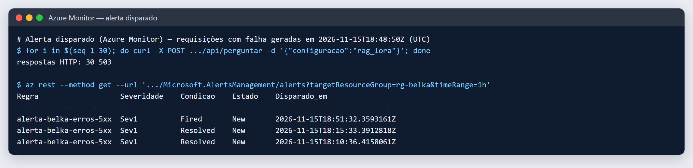
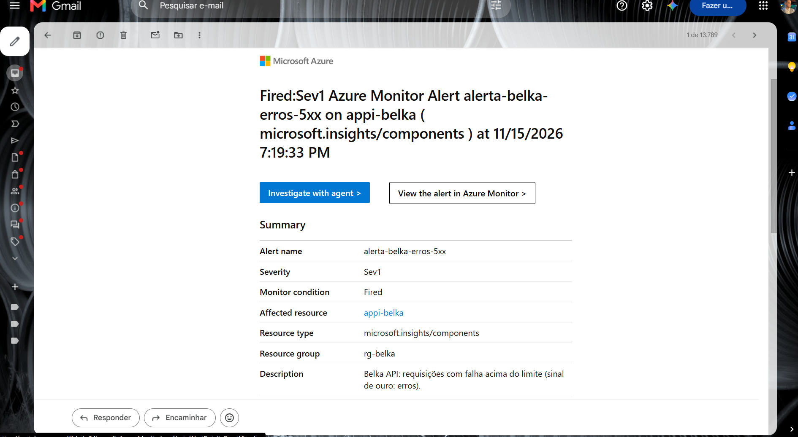
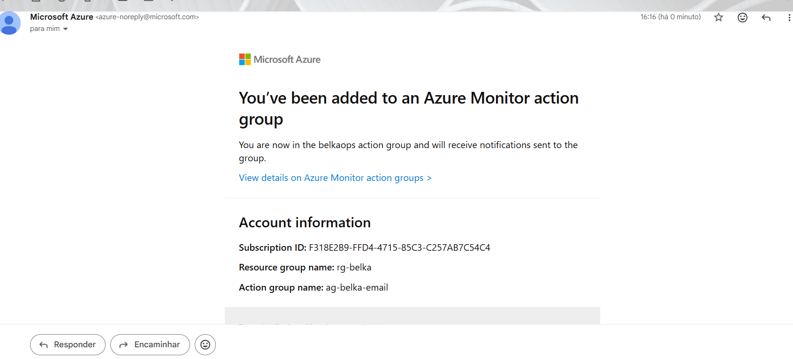
Modelo PaaS (Azure Container Apps):
| Camada | Azure | Equipe Belka |
|---|---|---|
| Datacenter, rede física, hardware | ✔ | |
| Hypervisor, SO dos hosts, orquestração do Container Apps | ✔ | |
| Certificado TLS e ingress | emite e renova | configura (HTTPS obrigatório, LLM com token) |
| Imagem do container (SO base e bibliotecas) | ✔ Trivy a cada push, base slim, não root | |
| Código da aplicação | ✔ Semgrep, revisão | |
| Segredos | armazenamento cifrado dos secrets | ✔ GitHub Secrets, OIDC, Gitleaks |
| Identidade e acesso | Entra ID | ✔ menor privilégio por resource group |
| Dados pessoais (LGPD) | criptografia em repouso | ✔ minimização, retenção, transparência |
| Monitoramento e resposta | coleta de métricas da plataforma | ✔ dashboard, alertas, ação |
| Dado | Pessoal? | Onde fica | Tratamento |
|---|---|---|---|
| Texto da pergunta | Pode conter | Memória do container durante a requisição | Não é gravado em log nem enviado à telemetria |
Latitude/longitude (/api/clima) | Sim | Memória; enviado ao Open-Meteo | Arredondado a 2 casas (~1 km); query string removida de toda telemetria; log de acesso do servidor desligado |
| IP do cidadão | Sim | Application Insights | Mascarado (0.0.0.0) — ip_masking_enabled = true |
| Telemetria (rota, duração, status) | Não | Log Analytics, Brazil South | Retenção de 30 dias, teto de 1 GB/dia |
| Risco por município (Databricks Ouro) | Não (agregado) | Databricks | Somente leitura |
| Assinantes (view LGPD simulada) | Sim | Não consultada em produção | — |
Todos os recursos ficam na região Brazil South (sem transferência internacional dos dados da plataforma). Credenciais nunca ficam no código, na imagem ou no HTML.
Assinatura Azure for Students. Estimativa feita na Calculadora de Preços da Azure, região Brazil South, pago conforme o uso: https://azure.com/e/c2f1571ae006489fa4094674da8ad8d8
| Recurso | Configuração na calculadora | US$/mês |
|---|---|---|
Container App belka-api | Consumo · 0,5 vCPU / 1 GiB · 1 réplica mínima (ociosa com desconto) · 0,1 milhão de requisições (dentro dos 2 milhões gratuitos) | 7,88 |
Container App belka-ollama | Consumo · 2 vCPU / 4 GiB · escala a zero; uso ativo dentro da cota gratuita mensal (180.000 vCPU-s e 360.000 GiB-s) | 0,00 |
| Azure Monitor | Log Analytics + Application Insights (< 5 GB/mês gratuitos), 2 regras de alerta, e-mail | 0,00 |
| Contas de armazenamento (state) | Blob · Uso geral V2 · LRS · Quente · 1.000 GB — teto conservador; o state real tem 34 KB e custa centavos | 34,06 |
| GHCR (imagens) | Pacotes públicos no GitHub, fora da Azure | 0,00 |
| Custo mensal estimado (calculadora) | 41,95 | |
| Custo anual estimado | 503,35 | |
belka-ollama sozinho custaria ~US$ 130/mês — por isso ele escala a zero e só fica com réplica fixa durante a avaliação. Após a avaliação, terraform destroy remove tudo.GetAzureSubscriptionsById returns null) nem o portal de patrocínios ("This account does not have an active Sponsorship"); o acompanhamento real é feito pelo saldo de créditos no portal da Azure.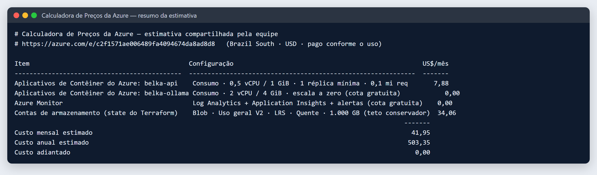
O README traz o passo a passo completo: rodar local com docker compose up --build; criar a base da nuvem com infra/bootstrap.sh (resource groups, state remoto, identidade OIDC); cadastrar Secrets/Variables; e publicar com um git push na main.